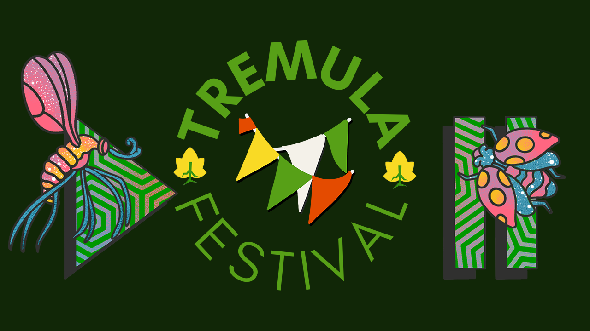

Tremula Festival 2024
Tremula Festival 2024
Introduction
It was great to go down to the South Downs near Brighton for the Production Day of Tremula Festival 2024 and learn about podcasting outdoors organised by the Tremula Network. It was an amazing day full of useful and informative sessions both indoors and outdoors with wonderful weather throughout making for a thoroughly enjoyable experience and help add more skills and knowledge to help other podcasters with Cluarantonn.
Audio for the Active Listener - Francesca Turauskis
Francesca said that Active Listeners are people who are travelling or outside or busy and they have chosen to listen to you. What are they doing whilst listening to your podcast? 51% listeners say they listen at home or relaxing so can control other sounds around them etc. 50% aren't where are not in a situation that is optimal for sound. They may be walking, housework, car, public transport, exercises, cycling. Think about this when doing podcast, if doing travel podcast the percentages for those will be higher.
How are they listening? 79% listening on Smartphones and if they have their phone to hand can see show notes etc but they may not be as it may be connected to TV or Bluetooth it could not be in their hand. 33% have smart speaker and nuances of asking to play something. 33% in car may be with MP3 and if audio is dipping in and out may be hard to hear when out and about.
Consider structure of show and use stings music and transitional phases which helps if people are going from train to train so break things up so they can Pause at a moment that makes sense. Even if have long conversation you could break it up if they flow naturally, they will go into different topics and break this up so it is still long you can break it down into 20-minute chunks. If having active listeners that situation is more likely so break podcast up into different sections.
Use mono as your final file to balance easily, don't have different speakers on different sides of audio so everyone hears every part of the conversation. Most podcasts stream in stereo but if doing sound scaping can do this but just let the listener know at the start so they listen with headphones. Is worth doing stereo if doing something more complicated.
Make all audio is a good level with amplification limits and compression and have all speakers at same level. Don't need really loud bits. Listen to your podcast when in an active situation so listen, listen and listen again. Respect your listeners time, with long form with no edits as people can be doing lots of different things so make sure experience is worth tuning in for as they are more likely to listen in.
32% of people are put off by one hour podcast. Sweet spot on 20-45 minutes but this does change all the time, but this is quite good time to fit into different parts of people's lives, judge how long a story needs to be and peak time is 09:00 but may be a bit earlier than this and listeners value consistency so is something to aim for if people are giving you that time. Mention when the next episode is coming.
Make sure you're thinking about edit length from start such as how many questions to you need to ask for a Q&A format for example so think what best questions are. Interviewing as an ally is how many questions need to ask or different way can ask e.g. what's next adventure are planning and respect the guest's time. What can you edit out, editing can take a long time, but you get better with time but look at repetition, fillers that could be removed but cutting our fillers like um and ah saved around 10 minutes. 53% don't care about length such as ums and ahs as can be left in, respect own time and capacity and what listeners are saying to you but do what's appropriate for you and for your style and don't have to do everything. Your listeners respect you and 70% of people listen to most of the podcasts they download.
Engagement and marketing for active listeners, speak to your listeners about where they may be when listening to you so can say if are still here and listening to the end can mention they are still listening due to driving or dedicated fan then can ask them for a favour and get feedback. Could do a listener survey and ask where audience is. Provide easy access later to information and resources when they do have their phone, think about information and where this could go. Provide transcriptions and can use AI as they are really great especially with names but check those and double check along with place names. Think about doing a newsletter and put in main call to action and put the show notes in there and can also have a link all where can find everything. Make it simple for people to find information afterwards.
Ask listeners to share experience listening including where they are taking a selfie or say if on public transport and ask them to rate and review although most apps and algorithms don't make a difference, but it helps get people listening to your podcast. Sting is a beat that you hear on radio, super short music or soundbite. Make sure that people know they are introducing themselves. Keep it consistent and make sure when reading bio check things are up to date.
Someone asked about using Audacity but would like to use AI, but people are moving to Descript and can edit with the transcript but can take things out abruptly. So always listen to it back to make sure it is okay plus if getting other editors to help can share the same file. Email newsletters how do you build up that can refer to On the Spot podcast which started with blog posts and you could put transcript in the show notes or link to it in the show notes.
How To Record (almost) Anything with One Recorder - Lisa Hack
Lisa talked about that you can record in Stereo but can go in mono and that condenser microphone on H1N and are more sensitive. Chunky podcast microphones are dynamic which takes more acoustic energy to make sound energy. Brains will focus on things to focus on, but a microphone is not that clever and will get everything recorder including background noise. Wear headphones as much as possible when recording and sound doesn't have to be massively loud to record. When recording take phone out if forgot recorder try and use a specialist app e.g. Rode app to record with or with Rode Reporter and video app does front and back cameras. Voice Record Pro is flexible for recording but is more flexible on Apple than on Android and Zoom mics can be used as USB mics connected with computer and turn limiter off unless in a very noisy place which isn't very forgiving. There is a setting to make a recording which is quieter with Zoom H5 under Rec Menu in Left / R Backup to record different tracks which will record backup set of recording 6db quieter but does use twice as much space.
There are sample rate and bit rate settings. Sample rate is how often 44.1Khz was used for CD quality and 16 bit is how many 1s and 0s in each sample for speech this is fine but music needs highest possible sample and bit rate. If do this get wider dynamic range if recording in unpredictable situations. 32bit float recording is now supported and many Zoom recorders don't have dials now.
Can have lavalier microphone with recorder or can get Zoom remote recorder Zoom F2 that can fix on someone and get great sound for around £150. Podcast mics were hard to find due to Covid. Accessories can include using a foam sponge but can get fluffy which catch hold of wind and can get fluffy microphone covers from Amazon quite cheaply for most microphones but for anything outside are handy, but a sponge microphone cover does help with popping and H4N also has the backup recording setting for recording two tracks.
Zoom H1N has level to set it recording automatically just remember to tell people when recording and Low Cut is handy to cut out low frequencies keep it off but could turn it on around traffic. 89Hz-100Hz. People don't hear sounds equally so there is an equal loudness curve. When party can hear bass as higher frequencies are shorter and don't go through walls. Masks helped block low frequencies so made people harder to hear. When recording outside as will lose lower and bass frequencies e.g. traffic is more mid and upper with less rumble. Zoom H2 more old school but note that the primary microphone is on the screen side and has modes for putting each mic on each channel and can change mind on recording later.
Everyone doesn't hear the same so need to think about making audio inclusive and need to make something mono compatible, Radio 4 is done this way and when driving people don't like sounds shooting at them just think about where the sound will be heard in the end. Additional Microphone Rode NG 2 which is a shot gun mic with an interference tube so is quite directional and very useful if things coming from side are less useful than coming in front and can have Raiko fluffy and condenser microphones need power compared to dynamic microphones. Zoom H5 and H6 can have mid-sized mic clip on microphones including a small shotgun microphone.
In sound you're trying to give an impression of sound as if record sea it doesn't sound correct, you need to get close up sounds as in your brain you make up those sounds, so make a few recordings of the same thing. Microphones need to be used to try and make picture in the listeners mind so be creative but realise limits in locating people to somewhere such as correct background noises, engine sounds etc although if doing fiction, it is fine as you can make things up. You can record things separately such as sea and dialog, it may not always be right but think about proximity to microphone, news readers would be clear but do give sense of a place if want to do that. Don't use AI tools as they will clean up recordings too much but dial them down if you do use them such as Auphonic which you can use for free but less is more with AI as it can be too clinical and humans don't like silence, when recording on H1N the level should be 18 and you can connect XLR microphones to the H5 from Zoom.
Preparing and Conducting a Walk-and-Talk - Liv Bolton
Liv talked about the impact the outdoors has had on people's lives, she hosts a podcast walking and talking with people who have inspired them and outdoors tips and tricks. They started podcast in 2019 and are a producer at the BBC. They were a news journalist and were very stressed and not very outdoorsy and took a look at their life and knew a friend who was doing a trail in New Zealand and suggested they go with them. But the idea didn't leave their head and looked into getting a sabbatical from work and got 5 months off and went to New Zealand which helped anxiety and mental health and felt more relaxed and less stressed and finished 800-mile walk. They realised this would be an unusual experience and build more things like that into their routine.
They sought out people to get tips and tricks and realised could record them to share with others, it wasn't a huge passion but an interest in podcasts and didn't know what equipment to get. They looked at blogs for tips and then looked at YouTube videos and looked at equipment etc. They decided to do an outdoor podcast and could have done it inside although did it once in a sheep farm, but have also recorded at a lake, disused railway and recording outside has been a bonus to see so many places around the United Kingdom.
Why do people like to record outside? Nice to hear the soundscape, when talking about nature it makes sense to be taken somewhere, it adds richness to the experience and allows listener to imagine themselves there. It is like inside and outside having a dialog. Being outside and walking together people open up and get very emotional responses that weren't expecting. It is not just being outside it is the connection with the guest. You get to go outdoors yourself and get to spend more time with the guest as don't expect a guest to be available 2.5 hours so can chat to them and sense where their head is at in the pre-chat find out what to ask them and get a massive chunk of time with that person and them not being at their laptop and may not be as energised to give their best answers although it doesn't mean those interviews aren't good.
Challenges recording outside is weather and what they have learned is to record podcast in series recording outdoors and do editing at home but if record in series can record in summer months to take out a lot of stress. They produce two series a week where work four days for BBC and one day for the series and each is six episodes and means they can choose recording mid-June to mid-August on Wednesday and choose when it isn't raining. Always have a plan B for rain and is why they did Sheep Farm plan B and could do the bulk of interview where it is dry and could get it recorded and do this no matter forecast and could look for sheltered woody area to record if needed. Also, when outside can have vehicle to go back to and for plane noise which can be irritating and plan for those but can be hard for planes so when talking to guest get them to choose a spot and select somewhere is quiet, sheltered and away from noisy road which also goes into the logistics of the sound recording.
Think about the time it takes but get guest to take them where they love but can be a long way from them needing long drives or train journeys and do you have time or money to do it is something to think about it and for first couple of years, they got a sponsor who cover travel costs for past three years but are lucky to have this. Other challenges are public liability insurance covers if the guest got hurt which is 45 per year but something to think about and permissions of where to record such as public footpath but are some places to be mindful such as National Trust place but need to get formal permission for this and Royal Parks of London such as St James's Park and Hyde Park but can have issue recording people there.
Things like wind need to think about that stuff but how to set up recordings is to think about and make guests aware when doing research calls and chat to them and find out what is to be expected and set everything out when podcast will be published and make them know it will be 2.5 hours and may get wet etc and let them know in writing and get written permission allowing to get filmed and some people use release forms but isn't something they have had to do. Logistics is to make it as easy as possible for guest to do recording so if need train can pay expenses but will usually be something they can walk to.
Equipment includes Zoom H5 recorder as can use it for walking alongside people but need grip to remove sounds of handling and the XY mic picks up sound of the birds and gets the side of the mouth while walking and do half an hour while walking outside. They have different mics including Lapel Mic from AudioTechnica using XLR and get X/Y feed for four channels of audio at the same time. Then have a set of headphones with audio splitter into H5 and another set for the guest to hear at the same level when recording sat down. They also record five or six methods of just sound and for gates etc get the noise of the gate or get few minutes of sound to layer the audio. The X/Y picks up the atmosphere of the recording and can get a bird sound that can be recorded.
Waterproof jackets can sound rustley but don't record in that weather and take shelter when not moving as much and make sure microphone is as close to mouth as possible and have back to wind and be in a slightly more sheltered place. They did have a recording where thought it would be fine weather and it started to rain it was drizzle and then it went, and they mentioned they had to move and did the rest in the car. A lot of it is trial and error but if have someone with a strong story, having fun and authentic people don't mind so much. Be aware of water and streams and can be distracting, it can be good to have a little sound and don't be too close.
Liv mentioned they haven't felt uncomfortable recoding but have thought it wouldn't be possible to get to the place to record within half an hour and get back again while doing the recording. They went to a Bothe on the Scottish Borders, but it was one of the more accessible ones that would be quiet, but it is just a matter of asking the right questions.
Do the guests know what they are going to be asked and what to expect and if they don't want something recorded? During call with guests will for general themes early outdoors life and three people who have inspired them and they are aware of boundaries and can mention things that they may not want to talk about. Could also bring up any personal issues and how to deal with this and check in a few times before recording and what they may be comfortable with, so those pre-chats are very important for this. They haven't had any fuss and there was an issue with someone who left their job and wanted that removed but generally can reason with guests, but it is about creating that bond that helps by being with them in person. It is nice to build those connections.
They record a lot of atmosphere, including bird song, footsteps and gravel and they edit with final cut pro which is video editing software but is very intuitive to edit audio and can layer audio easily. Editing for an episode is a day to edit it to record the intro, ums and ahs and restructure then add in music and add sections, ending and call to action but is why they have that one day a week but cost wise it is easier and when recording can make many of those edits in their head which is a little easier. They can use Descript to get transcript to do basic restructuring there and then do rest in Final Cut Pro.
If have someone say something as a good answer at a different stage which is by peppering edits with callbacks to when we're doing that. Can explore things in a different way and can lead a person back to a point to get what you need, if they haven't quite got there, you can be silent and then they will fill the silence to get what you need, and they take a backpack with picnic rug to sit on. If it in the middle of recording and there's a loud sound could ask to say it again. If in city, then loud sounds like planes are a big issue so remember to research something like that but can then use Lapel Mic sound more than X/Y microphone.
The show has inspired them to do so many different things and Scotland was amazing, and they had never paddle boarded or rock climbed before and talking in person can inspire and things can stay with you and they have started a quarterly walking club and had tips that have stayed with them and the biggest thing having conversations and connecting with people you can learn so much. They are not an audio professional but love talking to people and can get those stories from a 45-minute podcast or 10-minute video and use a pair of AudioTechnica 20:20 XLR Lapel Mics along with side-by-side recording with the X/Y microphones along with a fluffy using a H5 including a hand-held stand.
Tricks of the Trade: Active Interviewing - Leo Hornak
Leo talked about the idea of active interviewing, sometimes something unexpected happens when the tape is running, you don't have to be passive, you can create situations where something can happen. Played a piece about someone who is losing their ability to use words, and it is focused on an activity, it was interview about someone who taught astrophysics and had Alzheimer's diagnosis and to assess them can they tell the time on a watch or can they draw the time. It is tricky to hold the super position of three numbers for hours, seconds and minutes - they couldn't draw it but could understand why they were having trouble which had meaning and struggle but can understand things they didn't before, relearn things again and you learn more about what you need to know and could read the time again understanding the super positions of three numbers. Clock has longer second hand but isn't as important as minute hand which is shorter but wider and then shorter hand is the hour one and have to think about all the steps to work out the time in the end, but there is no path back to knowing how to do it as before.
There are so many other ways to interview this person and their wive and want be very respectful of their time, don't want to be too assertive and could have had an interview where asked how it has been since the diagnosis and would be what you expect and interview in that situation would be, but instead made the interview about an activity and made it a particularly memorable piece, had the build up and explained the situation and then told the time which has a bigger impact.
Make things happen in interviews when interviews happen. Do you do interviews where things happen? How to connect with people is first with the eyes, when taking people into a situation or an event then turn the person into the audience's eyes to describe something is much more powerful as they know a lot more about something. That person became the eyes of the listener to learn what is happening. Things are happening and people can do things, the show don't tell principal - it is more exciting when someone shows you what they know with their hands rather than tells, which is the second way is to connect. Then there is the final way to connect which is the mind of the person, when speaking to someone who isn't used to interviewing or is quite shy having something happen in the interview is important and they can forget the microphone is there and not worry about what people will think about. Encourage them to do an activity they know how to do they will forget and relax into an interview, and they will fell more authentic. Those three things are the eyes, the hand and the mind to connect to people.
How can an interviewer have something happen and then learn from it, for example there's a program about grave digging and talked about it and to make something happen she had them dig the grave and did the interview from the grave. Asked them questions while the grave was being dug and asked them about the process and made a better connection with them as the recording went on, they told them how many people they got to know and helps lessen the impact of someone dying and how they deal with things. There was an element of forgetting the microphone and if they had been in the studio they may have given great answers but wouldn't have been good, but she was taking part in what they were doing and was more trust and were literally in the same hole in the ground.
When you are wanting to make something happen during an interview there are things you can do or may do instinctively, you need to fight some of your own instincts as they may not be that helpful. If can imagine setting up interviews that idea of being respectful may have got in the way so plan and make sure you know what you are doing and doing the right thing and don't be put off. In the planning stage when speaking to someone and think something could happen is to have a clear plan and a mistake of those who are less experienced interviewer is to do too much, you could try and include too much in an interview and may need to explain a complex activity so need to keep concepts simpler so can spend time explaining that concept so need decisiveness in the planning stage. If there are too many things drop some of them, don't try and do too many things and more specific is better.
What activity to pick to make a good thing happen? There are many but there are some broad rules but when speaking to potential guest it is easy to get sidetracked about what is the right activity. Rules can be an activity the person really knows and is confident talking about which goes back to forgetting the microphone and demonstrates what they know and why you are interviewing them. You want that person to lose themselves in an activity with pure confidence and need to have a plan for the bigger message of your piece, but when trying to get content happening can often lose this so need to understand what the message needs to be. Symbolism of time would be richer than an idea compared to making a cup of coffee or digging a grave which is a powerful metaphor. May have a situation where guest wants to get involved and may have great ideas for you, but you know your programme, you need to avoid doing an interview that doesn't help anyone.
What to ask them in the interview is another critical point, such as what side of an escalator to stand on in London, you don't stand on both sides even though that moves more people than allowing the left side to proceed and did the interview while doing this. What is happening and then going into the emotions and how does it feel, the interview time is limited by the escalator journey, there's the journey and the description but also what does it feel like, for them it felt awkward that is what they focused in on. If they had a longer journey, they could have got into bigger ideas that should all escalators be like this, should they have had a longer journey. What do you feel about something, the practicalities of something and then the bigger idea that takes you beyond which could be not being able to go back, or for grave digging is having a different relationship with death and with escalator one was why do we have these conventions and what school or law tells people to stand where they do on an escalator.
Plan very carefully, pick an activity through a pre-interview with a chat without recording to see what they could do and speak about it a week before and you focus on what you want and when you get there think about those elements for audience to see through the eyes of the person get them to describe what is going on. The logistics of an activity for example the grave digging was to have a producer with them, but it would depend on the activity but the best kit is what you are used to using and within reason people can get overly focused on the technology like what microphone to buy, as long as it is appropriate it is fine, as long as it is something you are confident with and use a lot then that is the most appropriate choice, you want to be familiar with what you are using to record with.
If recording a rich sound which is for example with grave digging to have a conversational interview before but having easier questions nearby to build trust and then go into the activity and then go through key questions and describe what you see and feel and leave big ideas and record five or six minutes of just the activity with no voices and record this in stereo with a hard waring microphone and not be a shotgun microphone as want to just record the sound and not focus on the microphone too much but can do other things if know how to handle the microphone. Doing things on Zoom can be more difficult but anything that needs sound but not words need someone there who knows about recording.
There was an example of someone trying to beat a bus to Times Square and arrived fifteen minutes later and they didn't have to walk that fast and New York buses are the slowest in the country and things take longer than they should. They also included some of the facts of what they were talking about as they were walking along. Another example is a paddle out from when a surfer dies, and they all paddle out in tribute and the interview is seen through the interviewer's eyes by describing who is there and what is going to be happening.
Engaging Older Audiences & Accessibility - Anna Perrott & Sophie Little
Anna and Sophie met each other at the BBC and did different things with Music and News and united over sense of community and gave a platform for them such as Wally Webbs morning show and the sense of community was there, and you did everything yourself as a presenter and producer. They started SOUNDYARD podcasting studio and teach audio art and enjoy teaching people. When BBC cuts happened, they knew community that they served were being robbed of contributors and were left with no alternative. Can access any podcast wherever you want, and one contributor was a farmer, Chris Skinner, who was a complete wildlife obsessive and has a Roman Camp that had been excavated and has always brought this knowledge to the radio and advocated for wildlife and make decisions on their farm based on this. He hated being called an enthusiast and just wanted to talk about what he was passionate about and connected a lot of people to the countryside, so those cuts meant his programme was cut and his podcast on BBC was highest in region for any radio station and SOUNDYARD took it on as Chris Skinner's Countryside Podcast.
They really wanted to do something and wanted to take it on and is a huge audience and they are a CIC makes money from commercial work and would do social aims for this podcast, the original podcast was just lifted from radio so had email and telephone number to contact them about new podcast but relied on people who were tech savvy and not those who listen just on radio. People asked how they listen who don't have Internet, so they burn CDs and send them out for free and for those who did have Internet didn't know what a podcast was, so they built a guide to attract people to the different platforms. They also had a landline phone to call at any time to talk anyone though how to sign up for the podcast. His audience was older than 55+ who are left behind by local radio and need to have that sense of community. There was a lot of feedback as it meant a lot for them, but they were sending out CDs for free, but their needs are to cover cost of podcast as it is an important thing, their motto is do different. People who were receiving podcast wanted to donate as they wanted to pay for it as that particular audience were happy to donate to something that meant a lot for them.
They did think about adverts and sponsorship, but the audience didn't like adverts as they always listened to BBC commercial output and really knowing the audience was integral. It had to be available when they expected the episode to be there. Of people who did have Internet didn't know how to access podcasts and a mailing list would work with the weekly podcast with a newsletter with a link to listen to the podcast and 29% listen via the browser and their open rate of newsletter is 79% which is summary of episode and link to the podcast or to download. A lot of people probably don't know they are listening to a podcast, but they are seeing the impact of it which is people are seeing their wellbeing improved. It is spreading more about podcasts including own curated feed to access things that are of interest and irradiate digital isolation as there are ways to get content out to people. Podcasts are incredibly niche and could curate some interesting lists of content.
How do you spread idea of podcast without Internet with physical marketing including making posters for village halls and doctor' surgeries. Marketing at different age groups without using the Internet and get 233,000 downloads for 54 episodes with 4,500 downloads per week but is good to see that an audience is attracted, and they are hungry for stage shows and was almost sold out before it was even mentioned on the podcast. Content for older audiences love a calm listen and don't like to be patronised they want calm and steady listen with detail and is field recorded not in a studio with a co-presenter who helps, and the audience is there with them with sounds in the background, things are carefully described and not over described.
Podcasts are not like the radio, if they disengage from an episode, you have lost that person forever. Trust is important and integral for an older audience for example bad language has to be called for, but the main idea is connecting with people and when they consume with content may be different times such as 7am when they release it. They got in touch with a talking newspaper ChatterBox which record news or magazine pieces onto USB and those are sent out to people with players who can return them and helps people who are visually impaired. The ones that are sent out is a month of content and organisations like them are crying out for content and hospital radio will play out content as well from podcast. The things they do aren't driven by revenue but by social aim. Lot of people don't know what a podcast is and how to get one if they do and have to show them how to get them with a guide for iOS or Android. Podcasts would benefit from connecting with other podcasts or cover subjects like retirement or grandchildren. People may struggle to access their content. Bonkers about Beach Huts is a podcast by Natalie Young where she travels around UK including tour of area, if they are an asset and those who look after beach huts. Some people who live away from coast say it is a chance to be by the sea and take pictures of their beach hut and as they go around on tours they join local Facebook groups and was interested in getting more recordings on location.
Spreading word is maybe doing things like greetings cards like Christmas cards. Back part of card has details of podcast with QR code which people can sent to each other and may trust something from someone you know. The person can add a message about listening to the podcast. Introducing music was something they had to be careful with was gentle music but there was a pushback as when they get criticism, they really consider this and got many more who liked it. Bonus episodes don't work as they don't expect this and learned that people are habitual and don't like change. The show can be recorded and be available quite quickly and have editing time at home that they fit the podcast around and no one is paid although that is dream.
They do try and reach more audiences and help people connect and find community for digital inclusion work but can go for funding does take a lot of time. Regular funding would help with sustainability, but Chris Skinner's Countryside Podcast has generous donors and do have a surplus. They are also doing a stage show and have a mailing list which is a strong batch of information for funding and are looking at sponsorship opportunities which could be someone who supplies Chris for birdseed etc the listeners would trust this, he also uses other things that would be a good fit but when cold calling it is difficult but just need to explain the value of the podcast to advertisers. There are no social channels for the podcast but there is for the farm on Facebook where the podcast is promoted on, and this is a platform where a lot of the audience who online tend to use but not so much Instagram. Scope for introducing people to other podcasts is they have done that for their own but would be up for hearing about cross promotion about other podcasts that people would want to listen to.
Closing Comments - Francesca Turauskis
Why do an outdoor podcast festival? It is paying attention to what's around you and people have discoverer more of what's around there and aural perception is a deeper experience for listeners. People who work in activism often take a macho approach and a nature approach describes things more succinctly. You can have a nature connection without being outdoors.
One of reasons Francesca got into doing Tremula was working or emails made them sick and couldn't listen to hours of music without going to sleep. Audio consumption of podcasts is important despite people watching on YouTube etc you can listen anywhere and for different voices is important and could walk in the South Downs and listen to someone else's experience of it when doing this. Some people connect with visual medium but consuming this can be more challenging as with audio podcasts could listen to them when driving or wherever you are and that can make a big difference.
Listening to podcasts in an urban environment can be great for encouraging people to go outdoors. Also bringing local history to people can engage people with their local area more. The Podcast was recorded inside but they went around the places to get a sense of the area and what was there. Audio has a great potential to slow down a moment as we live in a media moment where things happen fast but with an hour-long podcast you can listen and enjoy a special opportunity to slow down and take away that constant need for change. Focusing on a podcast is a lot easier as audio of the outdoors can help you listen to someone sitting under a tree and it can be like the person is talking to you. You can be there under a tree and be taken to another place with audio.